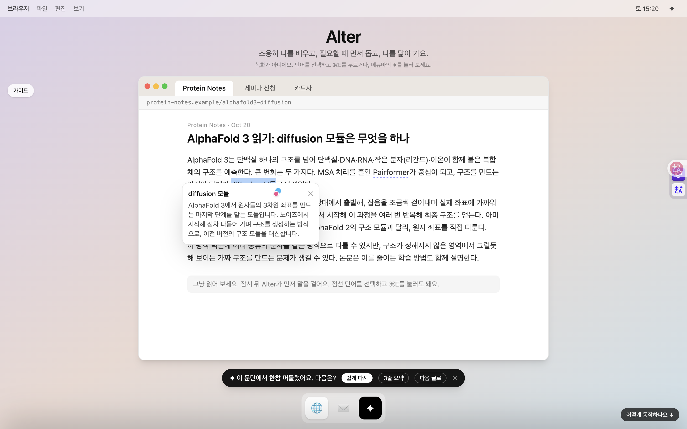
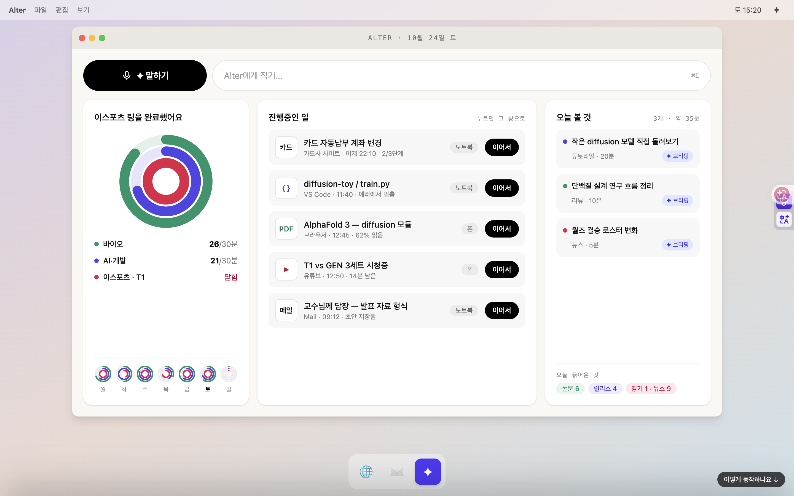
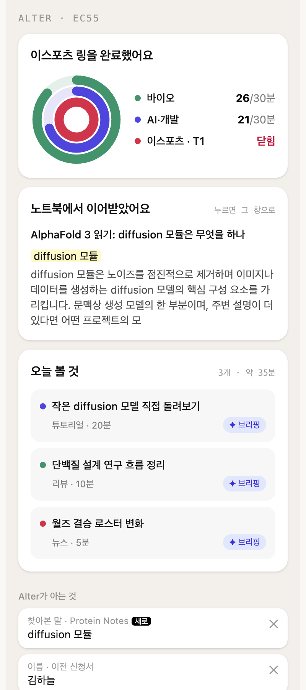

Alter · personal agent at the OS layer
Your model follows you across every app and device.
It reads along, helps before you ask, and stays out of the way. You can see everything it knows, and change it.
Quiet by defaultAppears only when you call it (⌘E) or when a small signal shows: you are stuck on a paragraph, a form is waiting.
Yours to see and editEvery fact has a source and a confidence. Edit it, delete it, switch learning off. Passwords, payments and banks are never touched.
Playful, never pushyDaily rings per interest fill with minutes of real use. Nothing is ever taken away.



Live demo alter-demo-gamma.vercel.app · github.com/chilling-soft/bloom-ambition